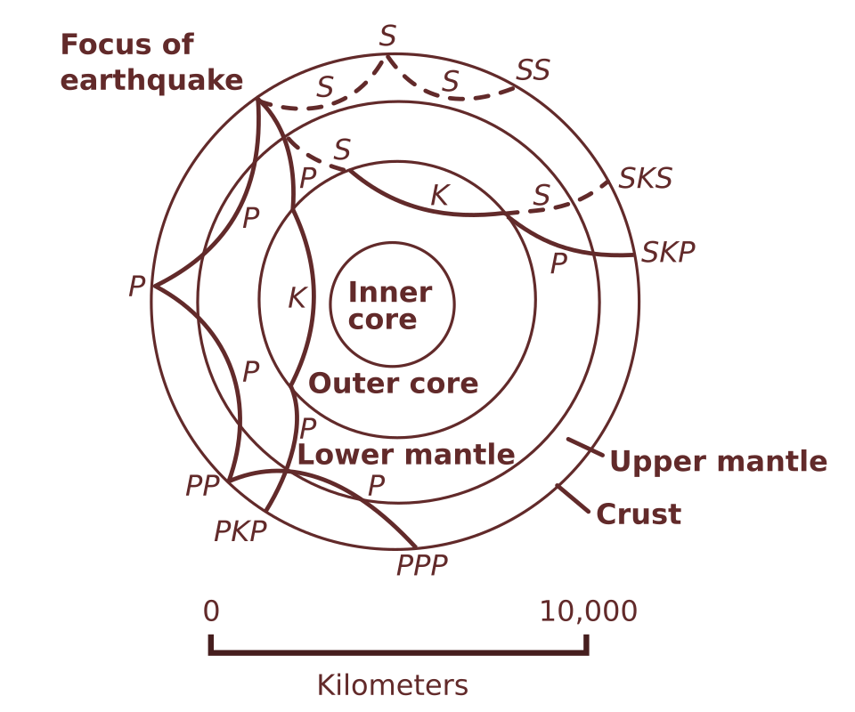

An earthquake is the sudden release of elastic strain energy stored in the rocks around a fault, radiated as seismic waves when the fault slips. Each year the global networks record well over a hundred thousand events large enough to locate. On long-term averages compiled by the US Geological Survey there are roughly 15 earthquakes of magnitude 7.0–7.9 and about one of magnitude 8 or larger. Over the twentieth and early twenty-first centuries earthquakes and their secondary effects, mainly tsunamis, landslides, liquefaction and fire, have killed on the order of 10,000 to 30,000 people per year on average. The record is dominated by a small number of catastrophic events, such as Tangshan in 1976, Sumatra–Andaman in 2004, Haiti in 2010 and Türkiye–Syria in 2023, and the deaths come overwhelmingly from the collapse of buildings that were never designed, or never built, to resist shaking.
Earthquake science sits where several disciplines meet. Plate tectonics explains where strain accumulates. Rock mechanics and friction explain how faults fail. Elastodynamics explains how seismic waves travel through a layered, attenuating, heterogeneous Earth. Statistical seismology describes how earthquakes cluster in space, time and size. Geotechnical and structural engineering turn ground motion into forces on soils and buildings. Probabilistic hazard and risk analysis combine all of this into the numbers that building codes, insurers and governments use. This course takes each of these in turn at graduate level, with worked quantitative examples, and ends with eight case studies that show how individual disasters changed the science and the practice.
Unless stated otherwise, SI units are used throughout. Seismic moment is in newton-metres (N·m), stress in megapascals (MPa) and accelerations in units of g = 9.81 m/s². Magnitudes and death tolls from historical events are uncertain, and where sources disagree a range is given.
In this course, you will:
- 1.Relate plate motions, interseismic strain accumulation and the elastic-rebound model to the seismic cycle on faults.
- 2.Apply Coulomb failure criteria, Byerlee friction and rate-and-state friction to fault stability and stress triggering.
- 3.Derive seismic wave speeds from elastic moduli, interpret seismograms and locate earthquakes from arrival times.
- 4.Compute local, body-wave, surface-wave and moment magnitudes, seismic moment, stress drop and radiated energy.
- 5.Use the Gutenberg–Richter and Omori–Utsu laws to forecast earthquake and aftershock probabilities.
- 6.Estimate ground motion, attenuation, site amplification and intensity, and evaluate liquefaction potential.
- 7.Set up a probabilistic seismic hazard analysis and interpret return periods, logic trees and deaggregation.
- 8.Explain the principles of seismic design, base isolation and earthquake early warning, and their limits.
- 9.Critically assess historical disasters and the open research questions that remain.
Figures


Contents
Plate Tectonics and the Seismic Cycle Lesson 2
Stress, Friction and Fault Mechanics Lesson 3
Seismic Waves, Earth Structure and Seismometry Lesson 4
Locating Earthquakes and Source Mechanisms Lesson 5
Magnitude, Seismic Moment and Energy Lesson 6
Earthquake Statistics, Aftershocks and Forecasting Lesson 7
Strong Ground Motion, Site Effects and Intensity Lesson 8
Liquefaction, Landslides and Other Collateral Hazards Lesson 9
Probabilistic Seismic Hazard and Risk Lesson 10
Earthquake Engineering, Early Warning and Risk Reduction Case Studies
8 major events analysed References
25 sources for further reading
Image sources
- Figure 1 · Quake epicenters 1963-98. By NASA, DTAM project team. Public domain. From Wikimedia Commons: https://commons.wikimedia.org/wiki/File:Quake_epicenters_1963-98.png
- Figure 2 · Earthquake wave paths. By SEWilco (after USGS). Public domain. From Wikimedia Commons: https://commons.wikimedia.org/wiki/File:Earthquake_wave_paths.svg